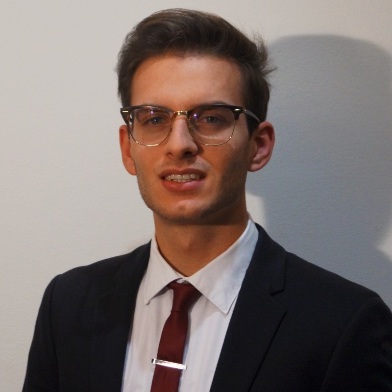

This is my
Cover Letter Presentation
“I am the master of my fate, I am the captain of my soul.” ― William Ernest Henley
Starting Cover
Hi guys, I'm the Matteo during the working time on left side. I'm a student with a great interest in the scientific field in general and specifically in the Medical Devices, Medical Imaging, Neuroscience, Data Science, Software development and AI fields. My first work experience started in February 2018 and during this period, I was able to know and experience the world of Medical Imaging, through an experience in the Neuroimaging Laboratory at the IRCSS Eugenio Medea Institute. In this place, it was born my great interest for Biomedical Life Sciences and Healthcare sector. When, I started my university path in Biomedical Engineering, I tried to merge the theorical knowledge with applied use-case. In this context, in January 2020, I stared to work as a research assistant at “Computational Life”, a biomedical startup that aims at modelling body fluids within the human body. I was in charge of analyzing cardiovascular parameters of the company mathematical model through MatLab software. The next year, in September 2020 I started an internship at Fondazione Bruno Kessler, a prestigious Italian research center, with whom I also collaborate for my bachelor final work “title”. My contribution was the analysis of data from MRI (T1-W image analysis and segmentation masks with brain volume extraction) using Python and Bash scripting. Furthermore, I was involved in the draft of the scientific paper “DBB Distorted Brain Benchmark”. At this point, I decided to enroll to MSc in Management Engineering to merge my past techical knowledge of Biomedical sector and the future management skills acquired thanks to the Master in Management Engineering. Moreover, during my experience in FBK, I improved my skils and knowledge in Artificial Intelligence and so, in September 2021, Iive joined as Training specialist and then, Community Manager in Deep Learning Italy, an AI company specialized in training and business consultancy in the field of AI. This experience was an enlightening because, in this time, I started to write as Researcher with others people of the team about Machine Learning Operations (MLOps) These experiences have been formative and enhancing, both from a personal and a professional point of view. In fact, not only, I have acquired practical knowledge and capabilities in the Biomedical and AI sectors, but I also gained precious transversal skills, as adaptability and teamwork.
This is not Matteo in leisure time (outside of work life). Matteo is merely a combination of these two souls. In fact, I have a great passion for the Healthcare and AI sector, which, however, I try to cultivate every day even in my spare time by surrounding myself with interesting and inspiring people who can help me grow all the time. Despite, this I also rightly happen to think about other topics . In my spare time, I am a big fan of hiking in the mountains, a football lover, and a committed social community person through AVIS. I describe myself as hardworking, ambitious and goal-oriented. Likewise, I am always eager to challenge myself in new challenging positions that require multi-tasking and flexibility, factors I learned while working as a student. I have also developed several personal projects in Computer Vision, Time Series, Arduino, 3D Printing, and other topics that you can find on the Homepage. I am a great believer in Kaizen culture i.e. progressive improvement, day by day both from the "romantic" point of view of the term and from the more analytical point of view. In fact, if we improved by only 1% every day: 1.01^(365) = 37.78. This means that at the end of the year you would find yourself about 38 times better off than you were at the beginning.